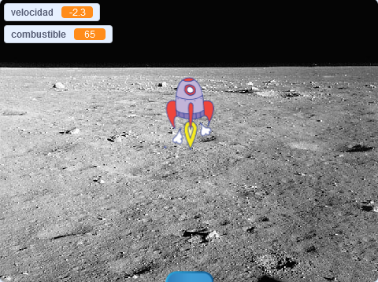
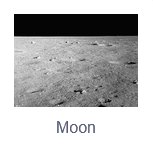
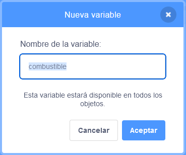
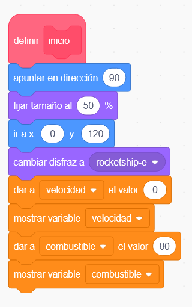
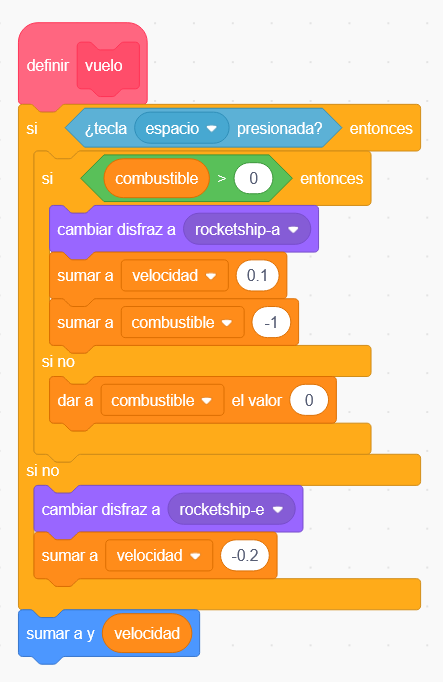
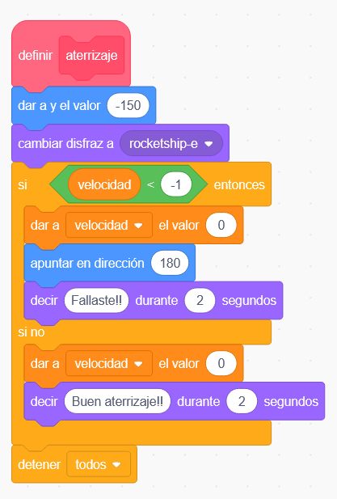
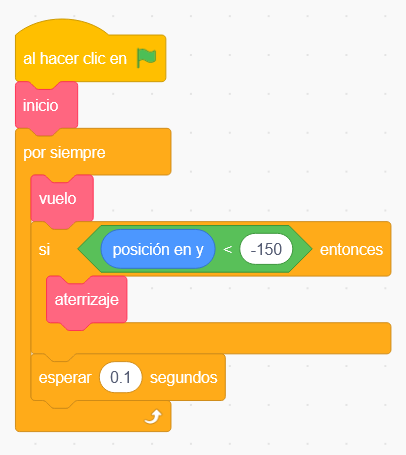
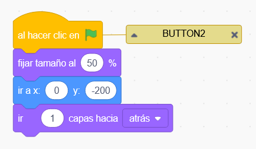

13. Aterrizar cohete¶
En esta práctica vamos a programar un juego que consiste en aterrizar en la luna un cohete que tendrá un movimiento realista con la gravedad y con el encendido de los motores. El objetivo consiste en encender los motores en el momento correcto para que el cohete aterrize a baja velocidad y no se estrelle.
{kind=link}
Iniciamos el editor de Scratch.
Pulsamos el botón idioma
 en la barra
superior y elegimos Español.
en la barra
superior y elegimos Español.Borramos el objeto gato presionando sobre el icono del cubo de basura.

Ahora escogemos un fondo adecuado para nuestro juego. Cambiamos el fondo de escenario a la luna.
Pulsamos el botón elige un fondo
 .
.Buscamos en la sección Espacio.
y seleccionamos el fondo Moon.
A continuación añadimos un nuevo personaje, un cohete.
Pulsamos el botón elige un objeto
 .
.Buscamos en la sección Todos.
y seleccionamos el objeto Rocketship.

Ahora crearemos la variable velocidad que va a almacenar la velocidad de caída del cohete sobre la luna. Si esta variable es muy alta cuando el cohete choque con la luna, el cohete se destruirá.
Pulsamos el botón de variables
 ,
,pulsamos en crear una variable
 .
.Cambiamos el nombre de la variable a velocidad

Por último pulsamos el botón Aceptar
Ahora crearemos la variable combustible que va a almacenar la cantidad de combustible que tiene el cohete para poder encender los motores y frenar la caída sobre la luna. Si el combustible se acaba, el cohete no podrá frenar la caída.
Pulsamos el botón de variables
,pulsamos en crear una variable
.Cambiamos el nombre de la variable a combustible
Por último pulsamos el botón Aceptar
Realizamos una subrutina que inicializa la posición y tamaño del cohete al iniciarse el programa. También establecerá los valores iniciales de las variables.
Realizamos una subrutina que mueva el cohete durante el vuelo. La velocidad aumentará hacia arriba cuando encendamos los motores y aumentará hacia abajo con los motores apagados.
Realizamos una subrutina que detiene el cohete al llegar al suelo y determina si la velocidad es demasiado alta o es correcta para dar por bueno el aterrizaje.
Programamos el programa principal que reune todas las subrutinas.
A continuación añadimos un nuevo personaje, un botón que nos servirá de plataforma de aterrizaje.
Pulsamos el botón elige un objeto
.Buscamos en la sección Todos.
y seleccionamos el objeto Button2.

Añadimos el programa de inicialización del Botón.
Pulsamos la bandera verde
 para probar el funcionamiento del programa.
para probar el funcionamiento del programa.
{kind=link}
{kind=link}
{kind=link}
{kind=link}
{kind=link}
Retos¶
- Añade meteoritos que se muevan de lado a lado lentamente para que el cohete tenga que sortearlos.
- Juega varias veces para establecer la mejor marca de combustible sobrante una vez aterrizado el cohete. A partir de ahí puedes bajar en el programa el combustible inicial para hacer el juego más difícil.